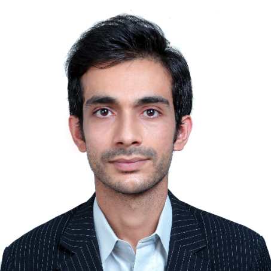
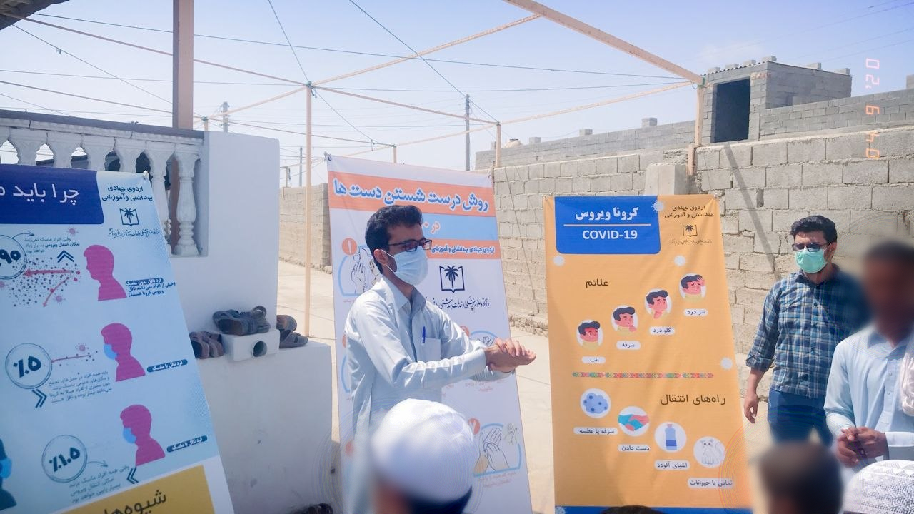
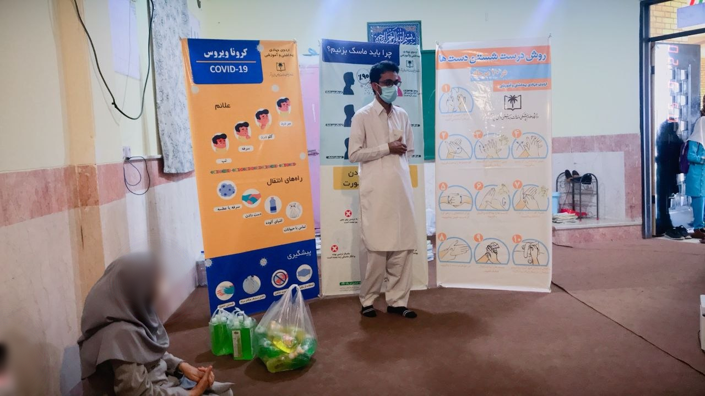
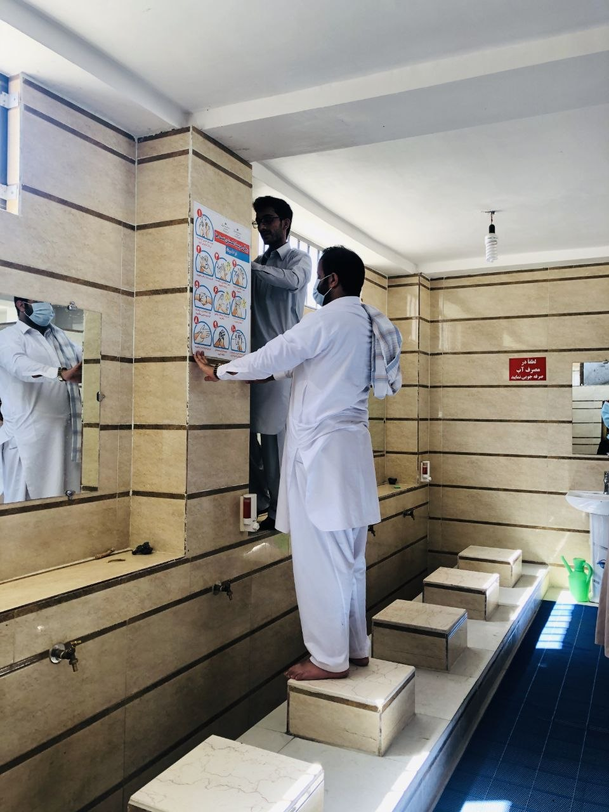
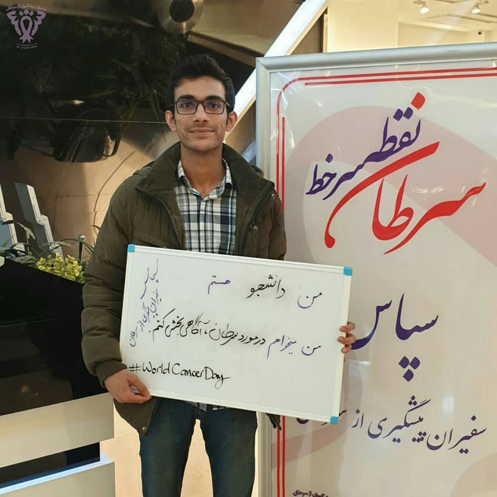
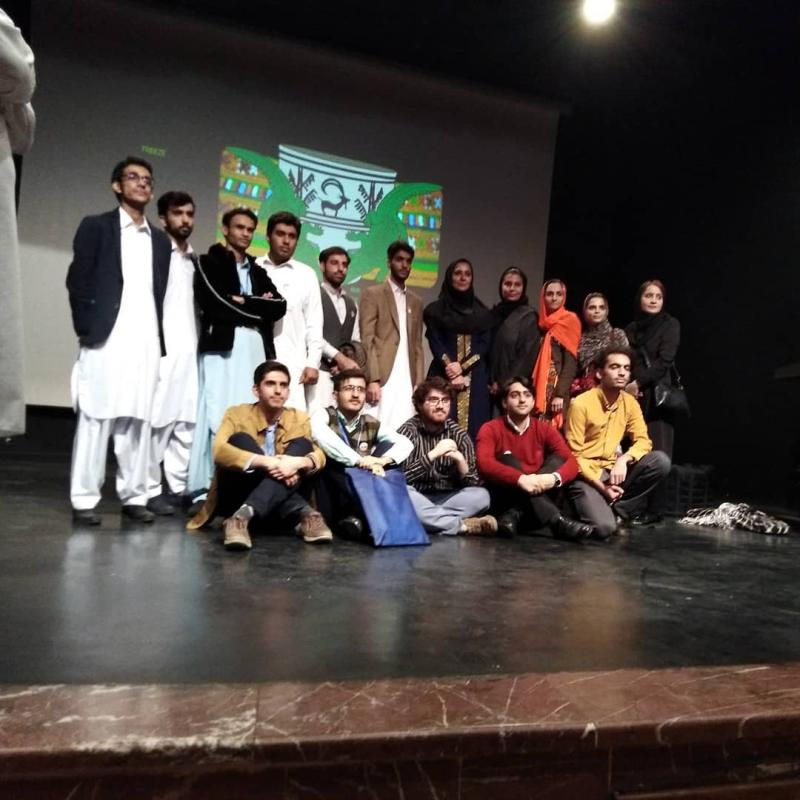

Clinical Machine Learning
Development, evaluation, and interpretation of machine-learning models using routine clinical data.

Clinical Machine Learning · Prediction Modelling · Clinical Epidemiology
Research Assistant, Alzahra Eye Hospital
Zahedan University of Medical Sciences, Iran
I am a medical doctor and clinical researcher interested in developing interpretable, practical, and clinically useful prediction models using clinical data. My work spans multidisciplinary research, including ophthalmology, neuro-ophthalmology, neurology, and clinical epidemiology.
I am motivated to work as both a medical doctor and a researcher because clinical practice allows me to identify meaningful questions, while research provides the tools to answer them. My research focuses on clinical machine learning, prediction modelling, and prognostic research. I am particularly interested in developing models and conducting studies to identify diagnostic and prognostic markers, especially in ophthalmology and neuro-ophthalmology.
I have also contributed to clinical trials, from data analysis through manuscript preparation and publication. Overall, I have contributed to more than 20 peer-reviewed publications and have experience across the full research workflow, including study design, statistical analysis, machine learning, manuscript preparation, revision, and publication.
My long-term goal is to develop practical and methodologically robust tools that can improve clinical risk stratification and decision-making.
Zahedan & Iranshahr, Iran · 2021–2026
Provided direct outpatient medical care in private clinical settings, with experience in patient assessment, diagnosis, treatment, follow-up, and preventive health counselling. This clinical experience informs my research interests in risk prediction, clinical decision-making, and data-driven healthcare.
Development, evaluation, and interpretation of machine-learning models using routine clinical data.
Risk prediction, survival analysis, model performance, calibration, and clinical utility.
Data-driven research in optic neuritis, multiple sclerosis-related visual disorders, and ophthalmic outcomes.
Clinical research in neurodegenerative and neurological disease, cohort studies, and diagnostic/prognostic research.
Mohammad Sedigh Dakkali, et al.
Manuscript under review at BMC Neurology
Rasouli S., Dakkali M.S., et al.
PLOS ONE
DOI →Rasouli S., Dakkali M.S., et al.
Multiple Sclerosis and Related Disorders
DOI →Arish M., Sargazi M., Dakkali M.S., et al.
Multiple Sclerosis and Related Disorders
DOI →Organizer
Organized community-based health education in underserved rural and peri-urban areas of Chabahar, with a focus on communicable-disease prevention, COVID-19 awareness, practical hygiene education, and local volunteer capacity building.
Activities included face-to-face education in mosques and schools, use of visual educational materials, distribution of hygiene supplies, installation of awareness posters, and engagement with trusted community members to support continued health education.




Organizer
Public-awareness initiative focused on cancer prevention, modifiable risk factors, early detection, and health education.

Organizer · Sharif University of Technology
Contributed to organizing a university cultural event celebrating the ethnic and cultural diversity of Iran.
Event page →Organizer
Instagram-based educational podcast initiative focused on practical and multidimensional health education.
Instagram →Organizer
Organized and contributed to community-oriented initiatives aimed at improving health literacy and preventive health behaviours.
Methods: Prediction modelling, machine learning, survival analysis, prognostic research, cohort studies, clinical trials, diagnostic accuracy research.
Software: R, Stata, SPSS.
I am interested in PhD opportunities and collaborations in clinical machine learning, prediction modelling, clinical epidemiology, and data-driven health research.